카테고리 제작 목적 : 마인크래프트가 유투브 컨텐츠 제작 및 새로운 세계관과 관계 모델링을 보여주는 툴로 활용되는 시작점인 지금 창작자 여성들이 다양한 마인크래프트 모드를 쉽게 접하고 활용할 수 있도록 한글로 정보를 제공하여 전체적인 접근도 향상에 기여하는데 그 목적이 있다. 개개의 모드를 상세히 설명하는 하위 문서를 먼저 만든 후 마인크래프트 전체 모드문서를 생성할 예정.
1. 개요
마인크래프트 모더 Forstride가 만든 다양한 지형 추가 모드. 현 버전 1.16까지 지원된다. 50가지 이상의 새로운 지형이 추가되고 350개 이상의 관련 아이템이 추가된다. 다양한 지형 모드를 사용하려면 기존 맵이 아닌 새로운 세계를 만들어야 한다. 새로운 세계 만들기에서 고급 세계 설정 옵션에 들어간 후, 세계 유형을 기본에서 "Biome O' Plenty"로 변경하고(세계 유형을 수회 클릭) 새로운 세계 만들기를 클릭하면 된다.
2. 내용
2.1. 불길한 숲 (ominous wood)
들어가면 시듦 저주가 걸리는 숲.
| | |
| 칠흑의 그림자 나무/잎사귀/묘목(umbran) | 죽은 나무/잎사귀/묘목(Dead) | 버드나무/잎사귀/묘목/덩굴(Willow) |
| 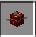 | | | 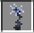
| | |
| 검은딸기나무(bramble) | 죽은 잎사귀 더미(Dead) | 죽은 풀(Dead) | 죽음의 꽃(Dead) | 가시나무(thorn) | 빨간 버섯 |
2.2. 습지 (Bog)
독 늪이 있는 지역. 보라색 늪에 빠지지 않도록 주의해야 한다.
| | |
| 기름진 흙(Loamy) | 거친 기름진 흙(Coarse Loamy) | 진흙(Mud) |
| | |
| |
| 덤불(Bush) | 부들(Cattail) | 사탕수수 | 죽은 잎사귀 더미(Dead) | 풀(Grass) |
| | | |
| 갈색 버섯 | 느타리버섯(Flat mushroom) | 결상버섯(Toadstool) | 파란 우유 버섯(Blue milk cap) |
2.3. 작은 숲 (Grove)
길쭉한 나무들이 자라는 숲.
2.4. 자작나무 숲 (Birch forest)
자작나무가 자라는 숲
2.5. 지붕 숲 (Roofed forest)
진입하면 머리 위가 가지와 잎으로 빽빽하게 덮혀 하늘이 보이지 않는 숲
2.6. 평야 (Plains)
2.7. 해바라기 평야 (Sunflower plains)
2.8. 늪지 하천 (Bayou)
큰 강의 하류지부에 있는 늪
| | | | |
|
| 수련잎 | 꽃핀 수련잎(Flowered lilly) | 작은 수련잎(Tiny lilly pad) | 조류(Algae) | 고사리(Koru) | 부들(Cattail) |
2.9. 늪지대 (Swampland)
2.10. 대나무 숲 (Bamboo forest)
2.11. 망그로브 (Mangrove)
2.12. 습지 (Marsh)
2.13. 나무가 무성한 늪 (Lush swamp)
2.14. 습한 풀밭 (Fen)
늪과 연못으로 둘러싸인 습한 풀밭.
2.15. 진창 (Quagmire)
진흙으로 이루어진 지형.
|
| |
| 진흙(Mud) | 기름진 흙(Loamy) | 고사리(Koru) |
2.16. 라벤더 평원 (Lavender fields)
2.17. 덤불 지대 (Chaparral)
2.18. 사바나 고원 (Savana plateau)
높은 지역에 있는 사바나 지대.
2.19. 산맥 끝자락 (Mountain foothills)
큰 산맥에 연결된 작은 산.
2.20. 산 (Mountain)
2.21. 대평원 (Steppe)
건조한 계절에는 불모지, 강우 계절에는 푸른 들로 변하는 대평원지대.
2.22. 벚나무 숲 (Cherry blossom grove)
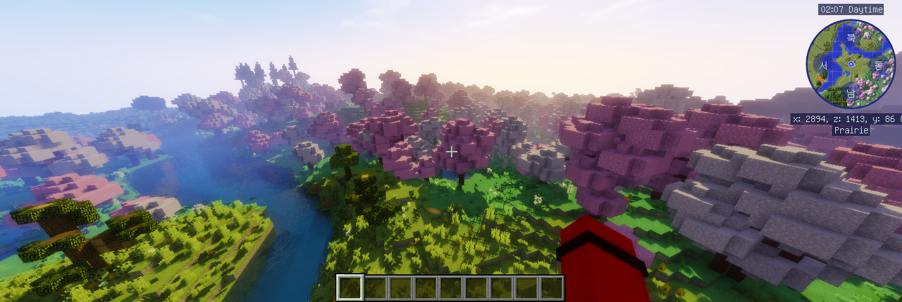
2.23. 천연 요새 (Shield)
돌과 석탄 광맥이 흙 위로 드러난 지역.
2.24. 자갈 해변 (Gravel beach)
바닷물 앞으로 자갈이 넓게 깔린 해변
2.25. 숲속 언덕 (Foresthills)
2.26. 침엽수림 (Coniferous forest)
2.27. 북방림 (Boreal forest)
2.28. 거목 타이가 언덕 (Mega taiga hills)
2.29. 툰드라 (Tundra)
2.30. 눈 내린 툰드라 (Snowy tundra)
2.31. 툰드라 사막 (Cold desert)
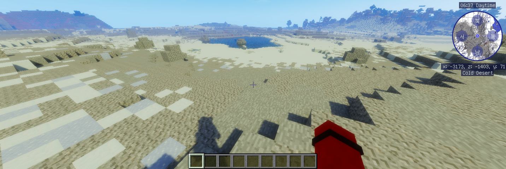
2.32. 눈 내린 숲 (Snowy forest)
2.33. 산악 지대 (Highland)
2.34. 관목림 지대 (Brushland)
유사가 있는 지역. 빠지면 나오지 못하므로 조심해야 한다.
2.35. 오스트리아 사막 (Outback)
| |
|
|
| 작은 선인장(Tiny Cactus) | 선인장 | 마른덤불 | 사막풀(Desert grass) |
2.36. 나무가 무성한 사막 (Lush desert)
| |
|
| 테라코타 | 부슬부슬한 흙(Sandy dirt) | 아카시아나무/잎사귀/묘목 |
| | | |
| 작은 선인장(Tiny Cactus) | 브로멜리아드(Bromeliad) | 마른덤불 | 사막풀(Desert grass) |
2.37. 삼림지대 (Woodland)
2.38. 메사 고원 (mesa plateau)
2.39. 오아시스 (Oasis)

| 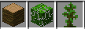
|
| 야자나무/잎사귀/묘목(Palm) | 정글나무/잎사귀/묘목 |
2.40. 관목 지역 (Shrubland)
2.41. 강을 낀 목초지 (Meadow)
2.42. 단풍나무 숲 (Maple Woods)
2.43. 삼나무 숲 (RedwoodForest)
2.44. 과수원 (Orchard)
2.45. 사계절 숲 (Seasonal forest)
2.46. 대초원 (Prairie)
2.47. 풀밭 (Grassland)
2.48. 꽃밭 (Flower field)
2.49. 건조한 관목지대 (Xeric Shrubland)
| | |
| 기름진 부슬부슬한 흙(Coarse Sandy dirt) | 모래 | 아카시아 나무/잎사귀/묘목 |
2.50. 미시건 사막 (Wasteland)
독 늪이 있는 지역. 보라색 늪에 빠지지 않도록 주의해야 한다.
| |
|
| 마른 모래(Dried sand) | 흰백합(Whited lilly) | 죽은나무/잎사귀/묘목 |
2.51. 꽃의 섬 (Flower island)
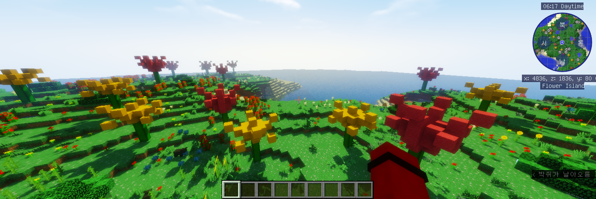
|  | |
| 거대꽃 줄기(Giant flower stem) | 거대 노란꽃잎(Giant yellow flower petal) | 거대 빨간꽃잎(Giant yellow flower petal) |
 | | | | 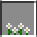 | |
| 장미덩굴 | 양귀비 | 데이지 | 해바라기 | 흰 아네모네(White anemone) | 파란 수국(Blue hydrangea) |
| 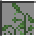 | |
| 바다 귀리(Sea oats) | 새싹(Sprout) | 세잎클로버(Clover patch) |
2.52. 죽은 숲 (Dead forest)
| | |
| 기름진 흙(Loamy dirt) | 죽은 나무/잎사귀/묘목(Dead) | 가시나무(Thorns) |
2.53. 지하정원 (Undergarden)
지옥에 있는 정원.
 | 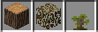 |
| 네더랙 |
지옥 비명나무/잎사귀/묘목(Hellbark) |
| | |
|
| 화염꽃(Burning Blossom) | 악마의 풀(Devilweed) | 아이비(Ivy) | 빨간 버섯 |
2.54. 오염된 모래 (Corrupted sands)
| | |
| 네더랙 | 영혼 모래 | 검은딸기나무(bramble) |
2.55. 지옥의 환영 (Phantasmagoric inferno)
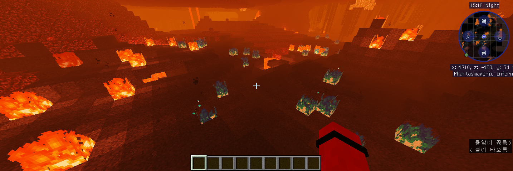
| |
| 재 블록(Ash block) | 잿더미(Pile of ash) |
2.56. 곰팡이 숲 (Fungi forest)
|
|
|
| |
| 발광버섯(Glowshroom) | 빨간 버섯 | 갈색 버섯 | 느타리버섯(Flat mushroom) | 결상버섯(Toadstool) |
2.57. 내장 더미 (Visceral heap)
뼈와 살점, 눈알, 피가 땅을 이루고 있는 지대
| | 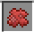 | |  |
| 네더랙 | 살(Flesh) | 살점(Chunk of flesh) | 눈알(eyebulb) | 뼈 블록 |